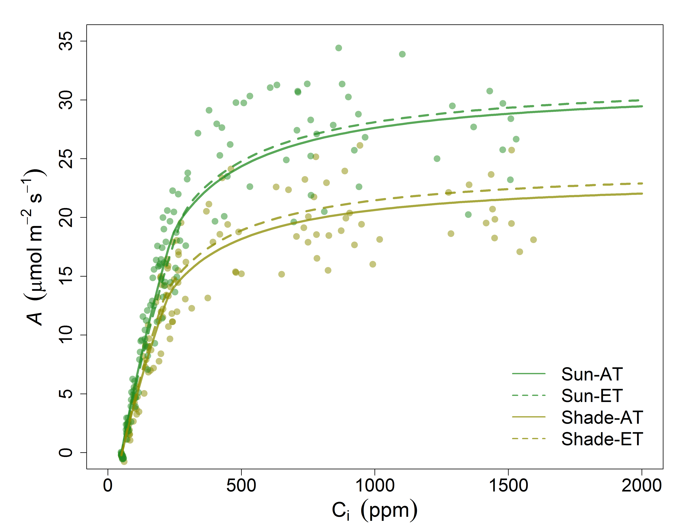

They should act to maximize carbon gain, while minimizing costs


Courtney Campany, Mark Tjoelker and Remko Duursma
PhD Candidate

So do all leaves act the same way?

Trees can't put all leaves in the sun
Photosynthetic capacity ↓ in shade leaves


Is the whole canopy optimized to prevent water loss?
What is the role of gm as its costs are less clear?

12 tree chambers with 6 having elevated temperature treatment
Imposed drought in final months
Heaps of gas exchange over 6 months

Measuring two extremes within a canopy
Leaves measured at current light environment


ca. 20% higher Vcmax and Jmax

ca. 25% higher Leaf Nitrogen


Can we reject the hypothesis that leaves are optimized throughout the canopy (YES)
Sun leaves utlize higher N while minimizing water loss (✓)
gm proportional to photosynthesis... and also 'ready to go' (✓)
gs and photosynthesis decoupled in shade (✘)
What's in a name? By any other name would smell as sweet
Why are shade leaves wasting water?
Implications for models